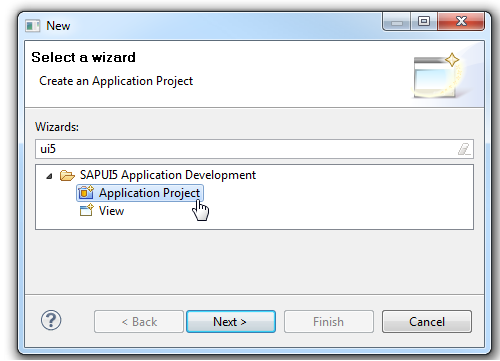

Create an OpenUI5 Application Project
To create a OpenUI5 Application Project, you must have installed the OpenUI5 Application Development feature in your Eclipse installation.
Procedure
- Start the New SAPUI5 Application Project wizard in the Eclipse by choosing
 New
New  Other ... SAPUI5 Application Development Application Project
Other ... SAPUI5 Application Development Application Project  .
.
Results
After finishing the wizard, the system performs the following steps:
- A new dynamic web project is created. All relevant files are created in the WebContent folder.
- A prefilled index.html is created which contains sap.ui.commons lib and sap_bluecrystal theme in the bootstrap in case of a desktop target device and the sap.m lib and sap_mvi theme in case of mobile target device.
- In WEB-INF folder a web.xml file is created which contains settings for resource handling and the use of SimpleProxyServlet.
- The installed OpenUI5 UI lib plugins are automatically added to the Java build path and added to the deployment assembly.
- The OpenUI5 class path container (if available) is automatically added to the JavaScript include path.
- The index.html page is opened in the standard editor.
- Inside the JavaScript block of index.html, code completion is available, see JavaScript Code Completion.
- An automatic switch to the J2EE perspective is performed.
- If you have selected the Create an Initial View option on the first page of the SAPUI5 Application Project wizard, a view and a view controller are created and the coding to call the view is added to the index.html file.